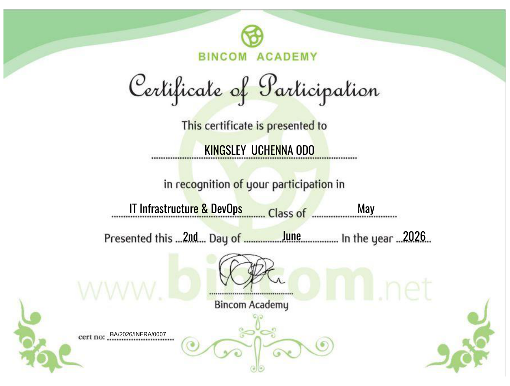
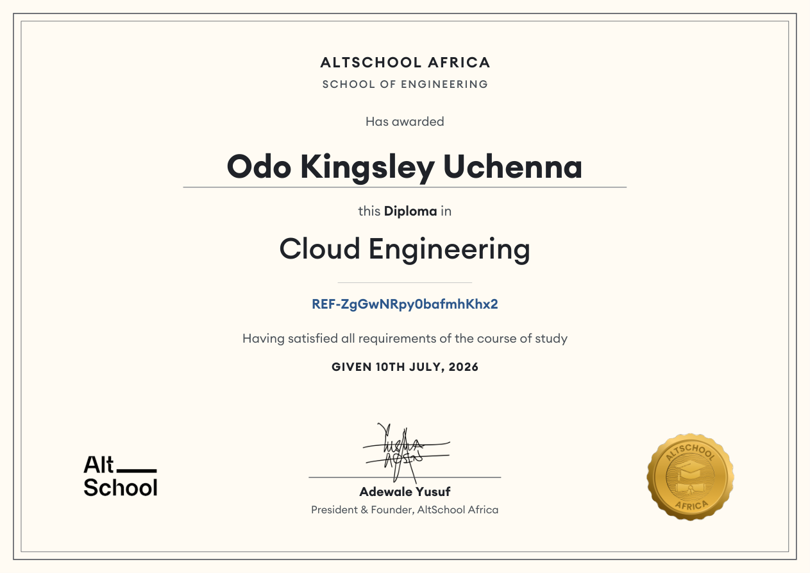
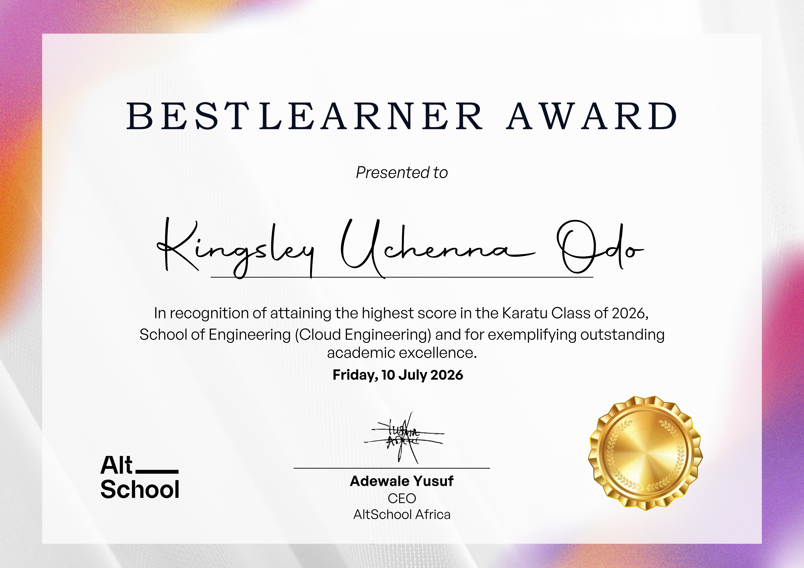
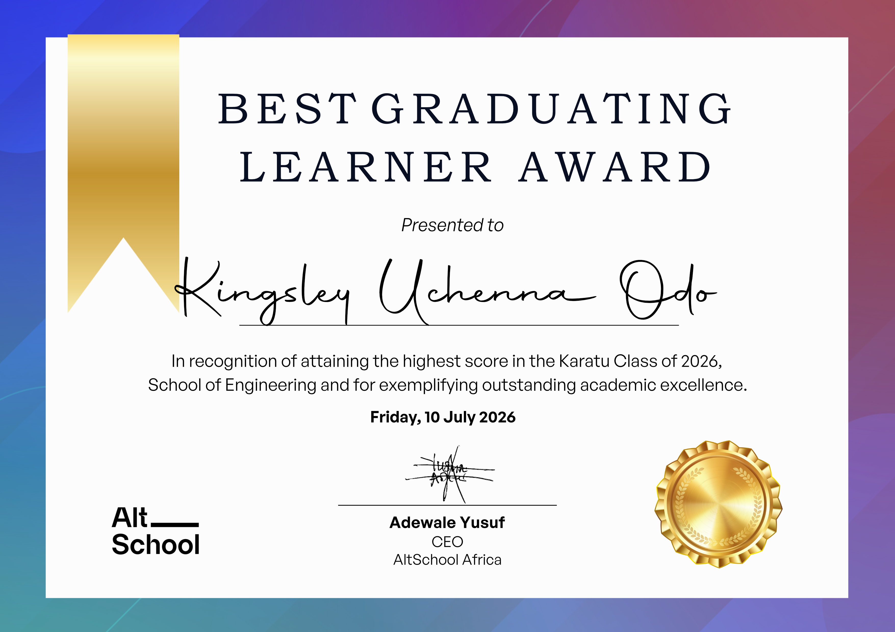
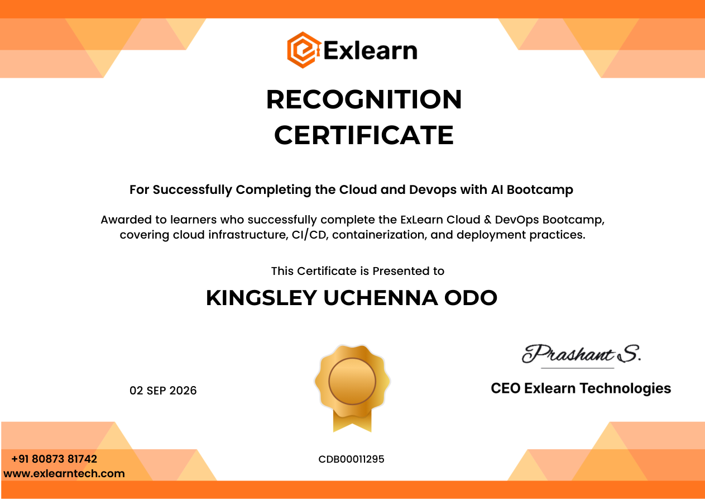

Azure
Azure Azure DevOps
Azure DevOps Terraform
Terraform Ansible
Ansible Kubernetes
Kubernetes

View certificateIT Infrastructure & DevOps
Bincom Academy
Building and operating secure cloud infrastructure across AWS and Azure, with a focus on Azure DevOps, automation, and reliable application delivery.
Hi, I'm Kingsley Uchenna Odo
Cloud & DevOps Engineer with experience delivering secure, automated infrastructure on AWS and Azure. I build and support Azure DevOps release pipelines, Azure Container Registry maintenance, and cloud monitoring. I also bring hands-on AWS experience with Terraform, GitHub Actions, containers, and production operations. Recognized as AltSchool Africa’s Best Graduating Learner and Best Learner in Cloud Engineering.
In my current role, I support web application and mobile application delivery through Azure DevOps, improve the safety of Azure Container Registry operations, and monitor applications with Azure Application Insights and Log Analytics. I enjoy making releases safer, operations clearer, and cloud platforms easier to maintain.
Learning & Recognition
A few milestones from my journey in cloud engineering, DevOps, and software development.

View certificateBincom Academy

View certificateCloud Engineering · Karatu Class of 2026

View imageAltSchool Africa · School of Engineering · 2026

View imageAltSchool Africa · School of Engineering · 2026

View certificateProfessional development
Professional development
A proud moment
A moment celebrating my Best Learner recognition at AltSchool Africa.
Preferred Digital Business Solutions
Bincom Dev Center